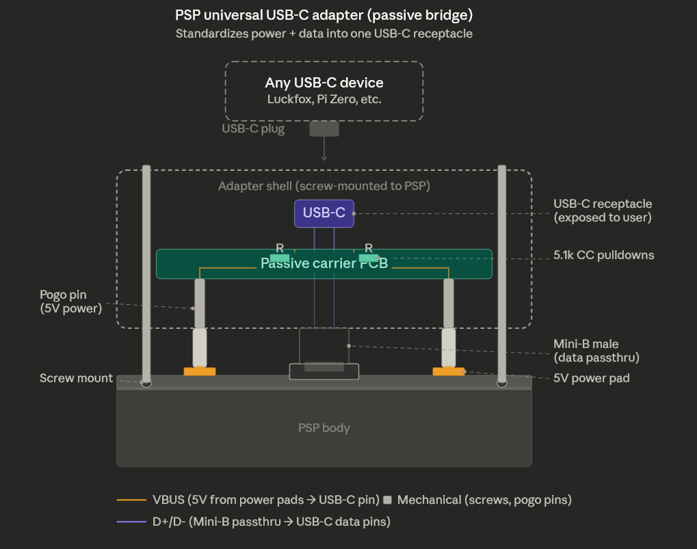

The Original Goal
The plan was straightforward: enable USB host mode on the PSP so it could supply 5V VBUS power and communicate with microcontrollers like the Luckfox Pico. Sony's first-party accessories (Go!Cam, GPS, TV tuner) proved the hardware could do it. We just needed to find the right register writes.
What followed was three weeks of increasingly deep reverse engineering across two PSP models (PSP-1001 and PSP-3001), dozens of firmware experiments, and the decryption of Sony's USB firmware blob — ultimately leading to a fundamental discovery about how PSP accessories actually work.
The Answer: Accessory Power Pads, Not VBUS
Before diving into the journey, here's the conclusion up front so we don't mislead anyone chasing the same path: the PSP never drives 5V on USB VBUS. Sony's accessories don't draw power from the Mini-B port's VBUS pin at all.
The PSP-2000 and PSP-3000 have exposed contact pads flanking the Mini-B USB port on the top edge of the console. Sony's accessories — the Go!Cam PSP-300, GPS receiver PSP-290, and 1seg TV tuner PSP-S310 — have spring-loaded pogo contacts that press against these pads when clipped on, drawing power directly from the PSP's internal power rail. The Mini-B USB connection carries data only.
How PSP Accessories Actually Get Power
What we assumed:
PSP ──USB VBUS 5V──> Accessory
Standard USB power delivery through Mini-B pin 1
What actually happens:
PSP ──side contact pads──> Accessory (power)
PSP <──Mini-B USB data──> Accessory (data)
Dedicated pads on left and right of Mini-B port
Accessory has spring-loaded pogo contacts that
press against these pads when clipped on
PSP Top Edge (front view):
┌──┐ ┌──┐ ┌──────────┐ ┌──┐ ┌──┐
│5V│ │GND│ │ Mini-B │ │GND│ │5V│
│ │ │ │ │ USB port │ │ │ │ │
└──┘ └──┘ └──────────┘ └──┘ └──┘
▲ ▲ data only ▲ ▲
└─────┴─── power pads ─────┴─────┘We confirmed this by acquiring a Go!Cam PSP-300 and examining its connector. The camera's clip-on housing has spring contacts on both sides that align precisely with the PSP's side pads. The Mini-B plug in the center handles USB data exclusively.
This also explains why Sony's accessories are always the USB host, not the PSP. The accessory contains its own USB host controller chip and initiates all communication. The PSP presents itself as a USB device — the same role it plays when connected to a PC for file transfer.
This is the correct starting point for anyone trying to connect external hardware to a PSP. Don't chase VBUS on the Mini-B port — it doesn't exist. Use the side pads for power, and the Mini-B for data. The rest of this article documents how we arrived at this conclusion and what we built along the way.
The Reverse Engineering Journey
Even though the answer turned out to be "use the side pads," the investigation produced a wealth of previously undocumented hardware knowledge about the PSP's USB subsystem. We mapped register blocks, decrypted firmware, discovered the real USB controller, and built a complete Syscon command reference. All of this feeds into the final adapter design.
Phase 0–1: VBUS Experiments
Built kernel-mode Rust EBOOTs to probe the PSP's USB hardware. Tested GPIO pins, Syscon SPI commands (0x00–0x50), SYSCTL registers, and USB PHY configuration. No VBUS appeared on either PSP model despite setting every accessible bit.
Phase 2: Firmware Decryption
Extracted and decrypted the USB firmware blob embedded within usb_cam.prx:
- Located encrypted
~PSPheader at offset 0x7D580 in kernel memory dump - Decrypted with
pspdecrypt(tag0x4C9494F0) - Decompressed KL3E format → 77,320 bytes of raw MIPS code
- Loaded into Ghidra at base 0x88600000, decompiled 40+ functions
Phase 3: Register Map Discovery
The firmware analysis revealed three previously undocumented register blocks:
| Address Block | Purpose | Key Finding |
|---|---|---|
0xBE4C0000 |
USB PHY serial controller | Clock, mode, features — configures the physical layer |
0xBD101000 |
OHCI host controller | Gated by BC100050 bit 13 — fully functional OHCI 1.0 rev 3 |
0xBDE00000 |
Raw SPI/DMA controller | Dead code in firmware — never called |
We also mapped the complete Syscon command set for Baryon 0x00040600 (256 GET commands,
14 SET commands identified from kernel disassembly) and found the _sceSysconCommonWrite
function with its GET/SET pairing (e.g., GET=0x46, SET=0x47 for USB power).
Phase 4: The MUSB Discovery
Built a kernel-mode EBOOT (oasis-prx-decrypt-psp) that uses the PSP's own
Kirk hardware crypto engine (memlmd NID 0xEF73E85B) to decrypt firmware
modules on-device. Successfully decrypted all 15 USB/system PRX files from
flash0:/kd/ — something desktop tools couldn't do with 6.61 keys.
A standalone binary analyzer (scripts/psp_nid_analyze.py) scanned the
decrypted usb.prx and revealed a critical finding: the USB driver
has 143 references to the MUSB (Mentor USB OTG) controller at
0xBD80xxxx and zero to the OHCI controller we'd been testing.
We'd been probing the wrong USB controller entirely.
| PRX File | Key Finding |
|---|---|
usb.prx |
143 MUSB accesses, GPIO pin 23 VBUS enable at offset 0x8C74, 14 sceSysreg imports |
lowio.prx |
50 GPIO accesses, 90 sceSysreg — the actual GPIO hardware driver |
syscon.prx |
Also controls GPIO pin 23 directly, accesses BC100083 |
Phase 5: Exhaustive GPIO & Register Testing
The 19-step interactive EBOOT (oasis-usb-vbus-psp) tested every accessible
approach to enabling VBUS on the PSP-3001 (TA-090v2):
- All 14
sceSysreg_driverNIDs resolved and called (14/14) - Syscon SET commands (0x47 values 0–4) accepted but no VBUS effect
- GPIO pin 23 direction and set registers accept writes, but output doesn't latch
- USB PHY already configured for host mode (
0x301) - MUSB controller at
0xBD80xxxxbus-faults — its bus gate is unknown 0xBE500000peripheral alive (offsets +0x18=0x99, +0x2C=0x71) — purpose unknown
Ghidra decompilation of lowio.prx revealed the GPIO output enable register at
0xBE240024 — written by sceGpioSetPortMode2 with
1 << pin. On-device testing confirmed this register rejects
all writes on TA-090v2. The lock is set by the Tachyon SoC's mask ROM during
the earliest boot phase, before any firmware code executes.
This is when we acquired the Go!Cam and discovered the side contact pads —
confirming that Sony never intended VBUS to carry power. The GPIO pin 23 code in
usb.prx controls an internal signal path within the USB
subsystem, not the external VBUS pin.
The Pivot: Custom USB Device Driver
With the power delivery question answered (use the side pads), we focused on the data
path. The PSP is always a USB device, so we built a custom USB device driver in Rust
using the undocumented sceUsbbd kernel API — the same API that
Sony's mass storage and camera drivers use internally.
PSP Thin Client Architecture
┌─────────────────┐ USB 2.0 ┌──────────────────┐
│ Luckfox Pico │◄───────────►│ PSP │
│ (USB Host) │ 480Mbps │ (USB Device) │
│ │ bulk xfer │ │
│ ARM Cortex-A7 │ │ Custom driver: │
│ Linux + libusb │ │ sceUsbbdRegister│
│ AI / compute │ │ EP1 IN (0x81) │
│ networking │ │ EP2 OUT (0x02) │
│ $9, 51x21mm │ │ │
└─────────────────┘ └──────────────────┘
Power: PSP side contact pads → adapter → Pico VBUS
Data: PSP Mini-B port → adapter passthru → Pico USBsceUsbbd: The Undocumented Kernel API
The PSP's sceUsbBus_driver exports functions for registering custom USB
device drivers. These functions are kernel-only and not documented in any public SDK:
| Function | NID (6.61) | Purpose |
|---|---|---|
sceUsbbdRegister |
0xB1644BE7 |
Register a custom USB device driver |
sceUsbbdReqSend |
0x913EC15D |
Queue async bulk IN transfer (device→host) |
sceUsbbdReqRecv |
0x7B87815D |
Queue async bulk OUT transfer (host→device) |
The NIDs were resolved from the PSP-3001's kernel memory dump — the standard PSPSDK NIDs are wrong for 6.61 firmware. The functions require direct address calls rather than NID-resolved stubs on ARK-4 CFW.
It Works
The custom USB device driver successfully registers with the PSP's USB bus driver and presents itself to any connected USB host:
$ lsusb
Bus 003 Device 073: ID 054c:1337 Sony Corp.
$ lsusb -v -d 054c:1337
idVendor 0x054c Sony Corp.
idProduct 0x1337
Interface Descriptor:
bInterfaceClass 255 Vendor Specific Class
bNumEndpoints 2
Endpoint Descriptor:
bEndpointAddress 0x81 EP 1 IN (Bulk, 512 bytes)
Endpoint Descriptor:
bEndpointAddress 0x02 EP 2 OUT (Bulk, 512 bytes)Two high-speed bulk endpoints at 512 bytes per packet — enough for ~30 MB/s sustained throughput. A full 480×272 RGBA framebuffer (522 KB) can be transferred in under 20ms, enabling 30+ FPS thin client rendering. In testing, the driver sustained ~100 FPS / 28 MB/s.
The Hardware: A USB-C Adapter for the PSP
With the software side working, the remaining challenge is physical: how do you connect a modern USB device to the PSP's proprietary power pads + Mini-B data port? The answer is a passive adapter that consolidates both into a single standard USB-C receptacle.


The adapter is a small clip-on module that attaches to the PSP's top edge:
- Pogo pins on the left and right press against the PSP's side contact pads, picking up 5V power from the PSP's internal rail
- A Mini-B male plug in the center passes through to the PSP's USB port for data (D+/D−)
- A passive carrier PCB routes both power and data to a single USB-C receptacle with 5.1k CC pulldown resistors (standard USB-C device identification)
- The whole assembly is held in place by a screw-mounted shell that applies consistent contact pressure on the pogo pins
Any USB-C device — a Luckfox Pico, a Raspberry Pi Zero, or anything else — plugs into the USB-C receptacle and gets both power and data through a single cable. The adapter is entirely passive: no active components, no firmware, no configuration. It's a mechanical bridge between Sony's 2007 proprietary connector and a modern standard.
Design Constraints from the RE Work
The reverse engineering wasn't wasted — it directly informed the adapter design:
- The PSP is always the USB device. The external SBC must act as USB
host. This means the Luckfox Pico runs a
libusbdaemon that initiates all communication — it reads frames from the PSP's custom bulk endpoints. - Power comes from the side pads, not VBUS. The adapter's pogo pins must make reliable contact with the PSP's pads. ENIG (gold) PCB finish is critical for durability across repeated insertions.
- The MUSB OTG controller exists but is gated off. If future firmware
research unlocks the MUSB bus gate (candidates:
BC1000C4,BC1000F0), the PSP might be able to negotiate USB OTG roles. For now, the device-mode architecture works and is proven at ~100 FPS.
Bill of Materials
| Component | Purpose | Unit Cost |
|---|---|---|
| Carrier PCB (ENIG) | Routes power pads + Mini-B data to USB-C receptacle | ~$3–5 |
| Spring-loaded pogo pins | Contact PSP side power pads | ~$0.50 |
| USB-C receptacle | Standard port for any USB-C device | ~$0.30 |
| 5.1k CC pulldown resistors (x2) | USB-C device identification | ~$0.02 |
| Mini-B male connector | Data passthrough to PSP | ~$0.30 |
| ESD protection (USBLC6-2) | Protect USB data lines | ~$0.15 |
| Shell (SLA resin or MJF nylon) | Screw-mount enclosure with pogo pin pressure | ~$2–4 |
Total per-unit cost is roughly $7–11 for the adapter alone (excluding the SBC). At quantities of 50, rigid-flex PCB tooling and SMT assembly setup amortize to under $2/unit.
What We Learned
This project produced several results that have value beyond our specific use case:
- The PSP's USB subsystem uses a Mentor MUSB OTG controller, not the OHCI
controller visible at
0xBD101000. The MUSB is at0xBD80xxxxwith its bus gate controlled by an unknownsceSysregregister. - GPIO pin 23 output enable is locked by Tachyon mask ROM on TA-090v2 and cannot be overridden from any privilege level available to firmware.
- The complete Syscon command map for Baryon 0x00040600: 256 GET commands and 14 SET commands, including the USB power control pair (GET=0x46, SET=0x47).
- On-device PRX decryption via Kirk hardware crypto engine is possible and more effective than desktop tools for 6.61 firmware modules.
sceUsbbdRegisterworks on ARK-4 CFW with correct NIDs resolved from kernel memory dumps, enabling custom USB device drivers in Rust.- PSP accessories use proprietary side contact pads for power, not USB VBUS. Any modern accessory design must account for these pads.
What's Next
- Connector reverse engineering: Multimeter + caliper measurements of the Go!Cam's spring contacts and the PSP-3001's side pads to determine exact voltage, pinout, and geometry for the adapter PCB
- PCB fabrication: KiCad design for the rigid-flex adapter, ordered from JLCPCB with ENIG finish on contact fingers
- USE_USB SFO flag: The PSP's
PARAM.SFOhas aUSE_USBinteger field that tells the firmware to initialize USB peripheral support. Ourmksfotool doesn't support it yet. Adding it may cause the firmware to pre-loadusb.prxand open the MUSB bus gate — worth testing even though the adapter design doesn't depend on it - Production run: First batch of ~50 adapters paired with Luckfox Picos as self-contained PSP compute accessory kits
- Convert to PRX: Move the thin client from game-slot EBOOT to kernel PRX
loaded via
PLUGINS.TXTfor always-on USB device mode alongside games